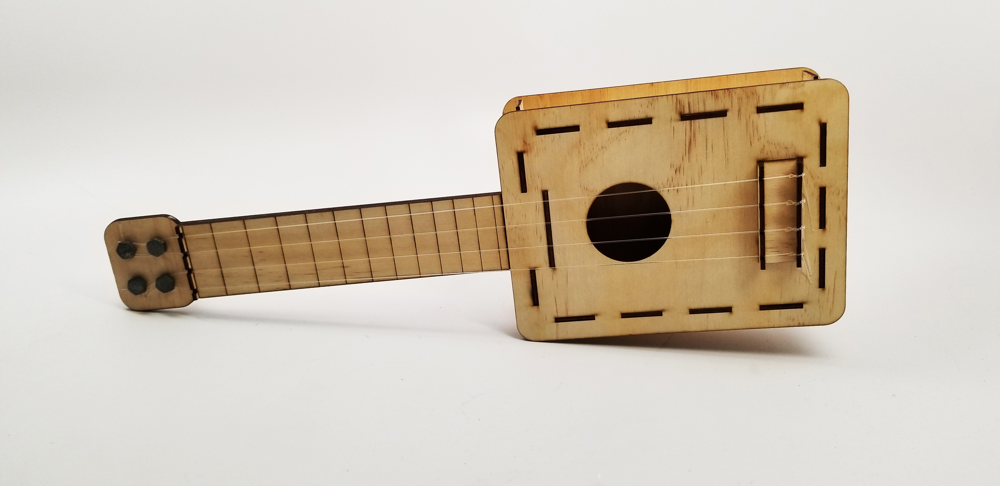

Industrial design student studying at SF State.
A flat pack ukulele made for kids and crafters alike. A fun project for kids to assemble and learn how to play the ukulele. Also great for anyone interested in laser cut assembly.

A stool inspired by polar bears. This fun and playful stool features an adjustable backrest (upright and relaxed) and a small storage area under the seat. Beary Comfy is the perfect addition to your living room, kitchen, or just about anywhere.
A convenient breakfast item that is nutritious and delicious. Honey ham and gruyere cheese wrapped in a tortilla with yogurt covered goji berries as a snack. On the go breakfast has never been easier.